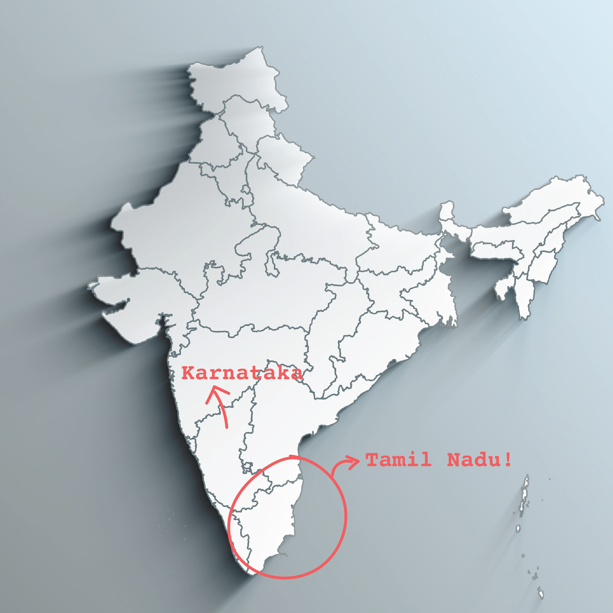
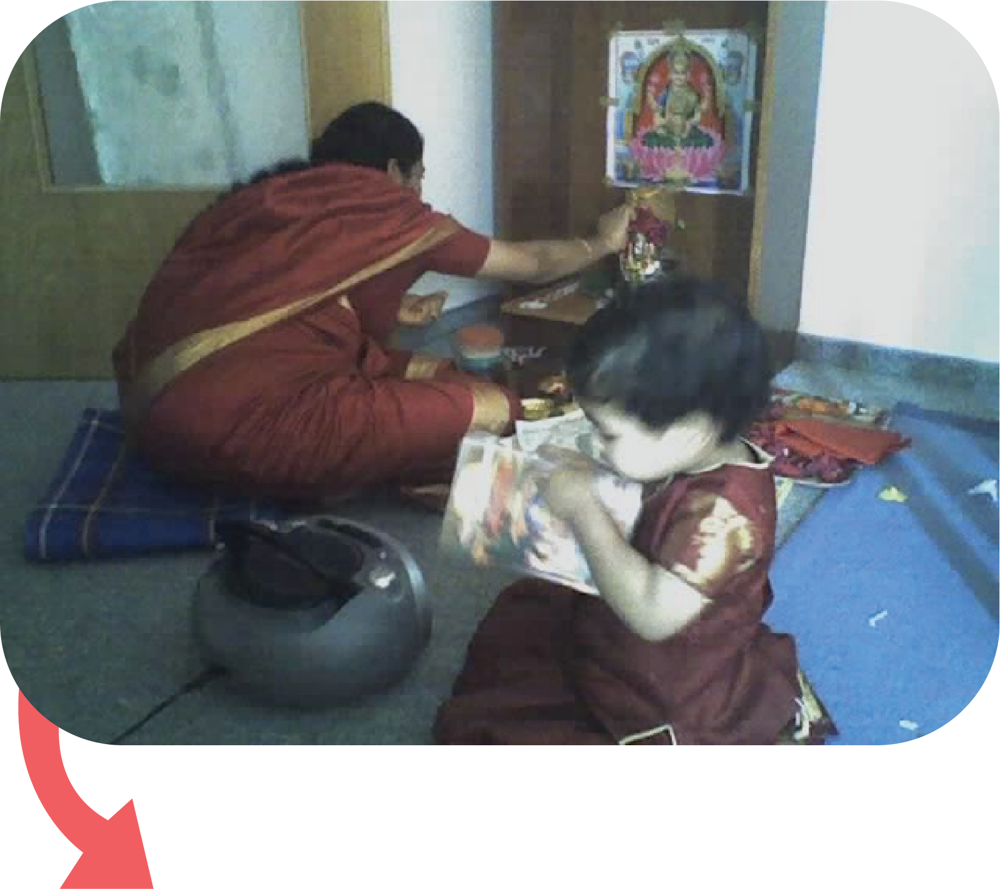
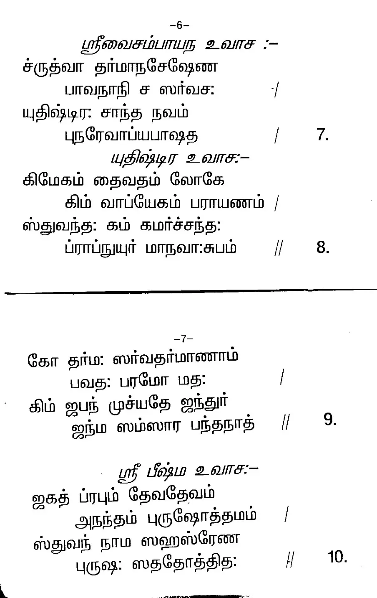
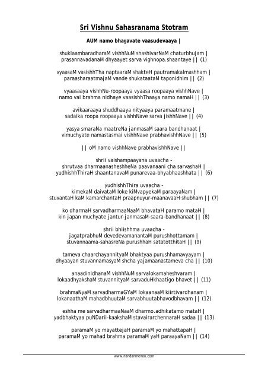
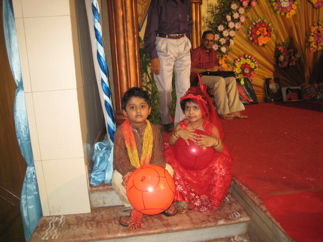
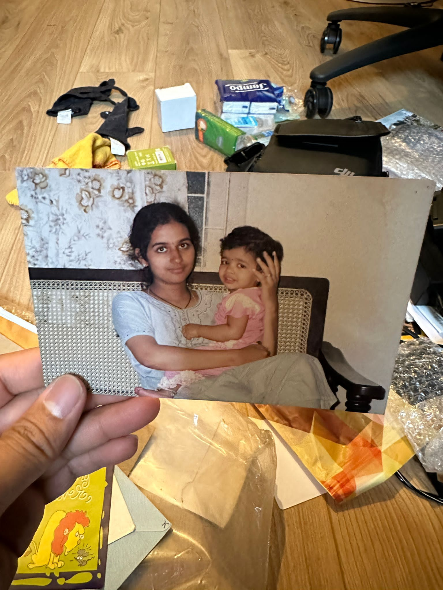

a.k.a, My mother tongue!
although I was brought up in a different state in India, I grew up speaking my language.
Though I have to say, I am not quite good at it yet.
(I always get teased by my family members for my, dare I say, very obvious, Bangalorean accent)
I have never been too fluent at reading or writing (my handwriting is pretty much like a middle schoolers),
but I am in the process of learning.

When I moved to Germany as a toddler, there were not many Indians, or immigrants around me. So, I would often just hang out at home with my mom and dad, which, I think, in a way, fueled my connect to the language more. Had I been outside for most of my day, I would have probably become a bit more comfortable with German instead. You know, the way every toddler picks and drops interests at the bat of an eye, maybe I would have done the same with my language.

lil me "reading" shlokas


One way I learnt Tamil is through shlokas, or mantras i.e, religious texts. As such, I have always believed to have a deep connect of Tamil to culture. It is something I have grown up with, something I have learnt through practices, and something I have learnt from the people around me. It is not only a precious language to me since it is my mother tongue, but it is a precious language to me since it is what connects me to my culture.
One such shloka! The Vishnu Sahasranamam :]

